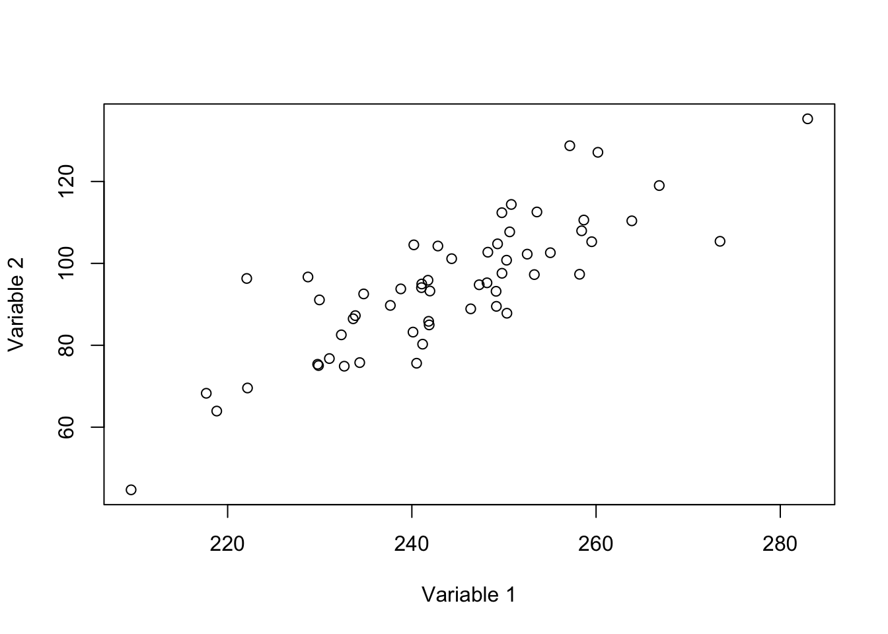

Solutions: Exercise 1.1 - Introduction to R in Ecology, Part 1
Jelena H. Pantel
2023-11-09 18:45:44.780538
Exercise 1. Simple calculation and variable assignment
- Open RStudio. The console window gives you some information about
the version of R you are running, and it gives the prompt
<. This prompt is waiting for you to input a command. Let’s use R as a simple calculator: type2+3and hit enter. What you should see is the following:
2 + 3## [1] 5- Please create a new variable called a and assign the value
5 to that variable using the
<-assignment operator. Then adda+5in the console. Make sure the displayed answer is 10.
a <- 5
a + 5## [1] 10- Let’s work with a vector in R. First, create a new variable
called b and assign it 3 values: 5, 13, and 2 (hint: use the
c()command - see help file by typing?cin the console). Then index the 3rd value usingb[3](make sure the value of2is displayed). Finally, useb[3] <- 16to change the 3rd value of b to 16.
b <- c(5, 13, 2)
b## [1] 5 13 2b[3]## [1] 2b[3] <- 16
b## [1] 5 13 16- Let’s use some built in functions in base R. Please use the
sqrtcommand to calculate \(\sqrt 16\) and \(\sqrt 67\).
sqrt(16)## [1] 4sqrt(67)## [1] 8.185353Exercise 2. Creating and saving an R script
- R scripts: In RStudio, go to *File, New File, R script’. A new document will appear. This is ultimately an open text document where you can write, save, and execute R code. Type the following into the R script:
# A new R Script by YOUR NAME 12-10-2023
a <- c(5, 13, 2, NA)
mean(a)## [1] NA`?`(mean)
mean(a, na.rm = TRUE)## [1] 6.666667Create a folder on your local hard drive dedicated to this course.
You can save the R Script there. For example, I saved it as
Users/jhpantel/Documents/EcoMod/script1.R. When I navigate
to that folder, I can see the R script in the file directory. Close the
file in RStudio (you can click the ‘X’ next to the file name in the top
left of the RStudio file pane). Go to the bottom right pane, click on
the ‘Files’ tab, and navigate to the directory where you saved your
script.R file. Make sure you can open the file from here (by
clicking on the file).
You can save all of your work during this class using .R scripts.
- R Markdown
In RStudio, go to File, New File, R Markdown. For Title, enter script.r. You can enter your name in Author and today’s date for Date. Keep everything set to the default selection, and click ‘OK’.
Go to Line 18 of this R Markdown file - delete
carsOn line 19, paste the same code from #5 above, and delete everything else from Line #22 onwards (“## Including plots” etc).
Click on the green right-facing arrow (“play”) button to the right of the red text - this will execute the code in this section (this section is referred to as a “code chunk”). You can see the output below the code chunk.
Save the R Markdown file as “script1.Rmd”.
Let’s add 1 more code chunk below the existing code chunk. In RStudio, go to ‘Code, Insert Chunk’. Paste the following code inside the code chunk:
plot(1:4, a, ylim = c(0, 15))Finally, see how you can use RMarkdown to make attractive code-based documents. Click on the small blue yarn ball - you will “knit” your R Markdown document to an HTML output (‘Knit to HTML’). See the attractive output format! (You can also knit to a PDF - but you may need to install a few more things to get this to work, we can discuss. Of course the document you are looking at was created using R Markdown and LaTEX).
If you want to learn more about formatting document in R Markdown, see the R Markdown Cheat Sheet at https://www.rstudio.com/wp-content/uploads/2015/02/rmarkdown-cheatsheet.pdf
Exercise 3. Working with functions
- We used different built-in R functions such as
sqrtandmean. Every function begins by typing the designated function name, opening a parentheses(, entering the arguments the function needs to execute the function, and closing the parentheses). The executed function returns the value of the calculations and operations done inside the function.
We will learn to write our own function - see my example here: I
create a function called my_fun, which takes two values
(x and y), adds them together, and returns the added
value.
my_fun <- function(x, y) {
z <- x + y
return(z)
}
my_fun(17, 3)## [1] 20Please choose two numbers for x and y, and use them
to execute my_fun(x,y).
- Your turn! Write a function called
times_seven()- it should take a single argument, multiply that value by 7, and return the new value.
times_seven <- function(x) {
z <- x * 7
return(z)
}
times_seven(17)## [1] 119- Write a function called
n1_subtract_n2()- it should take two arguments, and should subtract the second number from the first number, and return that value
n1_subtract_n2 <- function(x, y) {
z <- x - y
return(z)
}
n1_subtract_n2(17, 15)## [1] 2Exercise 4. Working with for-loops
for loops are an incredibly useful programming skill.
They are a way to repeat an operation or calculation for different
values. A for-loop is one of the main ways of controlling operations in
many programming languages, it is used to iterate (repeat) over a
collection of objects, such as a vector, a list, a matrix, or a
dataframe, and apply the same set of operations on each item of a given
data structure. We use for-loops to keep our code clean and avoid
unnecessary repetition of a code block.
The basic syntax of a for-loop in R is the following:
for (variable in sequence) {
expression
}
See the for loops I have written below:
# note how the loop changes the value of the variable x for
# each iteration of the loop: first x=1 and 'print(x)' is
# executed. Then x=2, then x=3, and so on.
for (x in 1:5) {
print(x)
}## [1] 1
## [1] 2
## [1] 3
## [1] 4
## [1] 5for (i in 1:5) {
z <- i + 6
print(z)
}## [1] 7
## [1] 8
## [1] 9
## [1] 10
## [1] 11for (i in 1:5) {
a[i] <- i
}
a## [1] 1 2 3 4 5b <- c("I", "love", "R")
for (i in 1:length(b)) {
print(b[i])
}## [1] "I"
## [1] "love"
## [1] "R"- Your turn - For each of three values of volume,
v <- c(1.6,3,8), calculate the mass, wherem <- 2.65 * volume ^ 0.9. Please calculate this in a loop. You can print the values within the loop.
v <- c(1.6, 3, 8)
for (i in 1:length(v)) {
m <- 2.65 * v[i]^0.9
print(m)
}## [1] 4.045329
## [1] 7.12287
## [1] 17.21975Exercise 5. Make a lovely plot!
We can agree my scatter plot of a in #6 is not a very
attractive or complex plot. Let’s quickly use a built-in R dataset to
improve our control over what our plots look like.
- Use base R commands to improve the plot - we can add arguments to
the plot command that change the plot visualization. Here we
progressively alter arguments to
plot
plot(pressure$temperature, pressure$pressure)plot(pressure$temperature, pressure$pressure, xlab = "temperature",
ylab = "pressure")
plot(pressure$temperature, pressure$pressure, xlab = "temperature",
ylab = "pressure", pch = 19, col = "orange")- We can also use the plotting library (its really an entire plotting
language embedded inside R)
ggplot2. There are a few, more complicated steps needed to work with ggplot. We’ll quickly make a scatterplot:
library(ggplot2)
# if this doesn't work, you'll need to install the ggplot2
# package this way: install.packages(ggplot2)
# Basic scatter plot - supply the name of the dataframe,
# the x and y values from that dataframe, and use
# geom_point() to draw points
ggplot(pressure, aes(x = temperature, y = pressure)) + geom_point()
# Change the point size, and shape
ggplot(pressure, aes(x = temperature, y = pressure)) + geom_point(size = 2,
shape = 23, colour = "orange", fill = "skyblue")- Make your own plot of the following data:
# We quickly generate some fake data
data1 <- rnorm(57, 245, 15)
data2 <- rnorm(57, data1 - 150, 11)
plot(data1, data2, xlab = "Variable 1", ylab = "Variable 2")